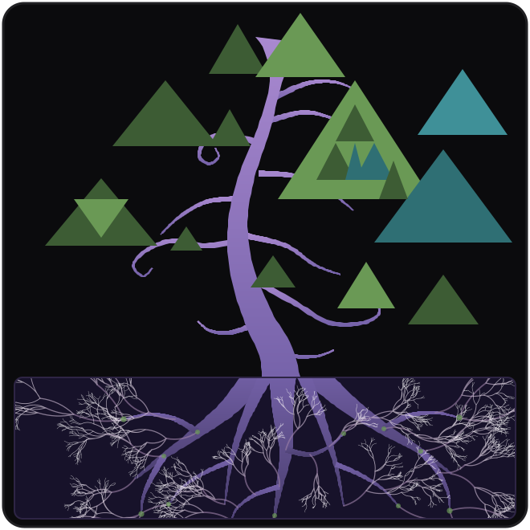

adapton
Programming language abstractions for incremental computation: a program's run leaves behind a graph of what it named, read and demanded, and that graph is what the next run repairs instead of redoing.
Adapton is not one implementation. It is a recipe — a handful of primitives and the rules for running them — set down in papers since 2014 and cooked in several languages since.
Where the recipe is cooking#
A recipe outlives its kitchens. Fumola is the one it is cooking in now — the fullest expression of Adapton so far, and by a distance the most written down.
Fumola is an experimental language whose surface is ordinary — functions, records, variants, modules, borrowed from Motoko — and whose execution model is Adapton. Its incremental primitives are this project's, extended with symbolic space and time, and a program can read back the graph its own run left behind, as ordinary data.
Its page is the one to read: the primitives one at a time, the two modes a program runs in, the two semantics the runtime implements, the papers underneath, and a console running the whole thing, compiled to WebAssembly, in the browser. Fumola also runs inside Hazel, a live programming environment, where editing a program re-forces the same named thunk — which is what an incremental edit was always meant to be.
- fumola.org The language, explained The primitives, the semantics, the history, and a Fumola console you can type into.
- Adapton/fumola The implementation Rust, with the Fumola module library and the examples alongside it.
- adapton-recipe The Extended Adapton Recipe The recipe itself, written out: demanded computation graphs with symbolic space and time. What Fumola implements.
- replayground A graph you can walk through mergeSort on 44 elements, drawn from a Fumola program reading its own event history.
The recipe, in short#
A program is run so that changing its input does not mean running it again. As it executes it builds a demanded computation graph: cells, which hold values, and thunks, which are suspended computations, with an edge for every action a thunk took — every cell it wrote, every cell it read, every thunk it forced — kept in the order it took them.
The graph exists so that a later run can be repaired rather than redone. When a cell changes, the thunks that read it are the ones whose results are in question; the rest of the graph is still good, and is reused as it stands. What makes this addressable at all is that every cell and thunk has a name: the run after the edit has to recognise the node it is about to recompute as the same node as last time, and a name is how it does.
thunk { e } // suspend a computation
`n := e // put: write the cell named `n
@p // get: read a cell, recording the edge
force(p) // demand a thunk, recording the edge
force(`n := thunk { e }) // the idiom: name it, store it, demand it.
// running it again with the same name is an editTwo papers are between them the whole of that: the first is the machinery, the second is what makes it addressable. Everything after them has been a matter of saying it more precisely, or building it somewhere new.
Papers#
- Adapton: composable, demand-driven incremental computation PLDI 2014 · pp. 156–166 · doi:10.1145/2594291.2594324 Adapton itself. Demand drives the computation, the demanded computation graph records what that demand touched, and the graph is what a later run repairs.
- Incremental computation with names OOPSLA 2015 · pp. 748–766 · doi:10.1145/2814270.2814305 Names, made explicit and first-class. Without them a second run has to infer which node is which; with them, reuse becomes something a program can control deliberately.
Drafts, on typing these programs rather than only running them: Fungi: typed incremental computation with names (2018), and its predecessor Refinement types for precisely named cache locations (2017). Further back, Adapton descends from self-adjusting computation, whose root is Adaptive functional programming (Acar, Blelloch, Harper, POPL 2002). A talk from March 2015 covers the first two papers.
Implementations#
Kitchens, in order of use. Only the first is current; the others are left standing because the papers point at them.
- fumola Rust — current A language of its own, rather than a library. See above.
- adapton.rust Rust — a library Adapton as a crate: documentation, last published December 2019.
- fungi-lang.rust Rust — the typed prototype The type-and-effect system of the drafts above, implemented. Archived.
- adapton.ocaml OCaml — the OOPSLA 2015 artifact Nominal Adapton as evaluated in the paper. Artifact guide; the PLDI 2014 artifact has its own site.
- adapton.racket Racket — contributed Not by us.
The first two prototypes, in OCaml and Python circa 2014, were Mercurial repositories on Bitbucket and did not survive its removal of Mercurial hosting.
People and funding#
Adapton is the work of Matthew A. Hammer, Jana Dunfield, Michael Hicks, Jeffrey S. Foster, David Van Horn, Kyle Headley, Monal Narasimhamurthy, Dimitrios J. Economou, Nicholas Labich, Khoo Yit Phang, James Parker and Jared Wright — begun in the programming languages groups at the University of Maryland and the University of Colorado Boulder, and continued since 2023 as independent research.
The academic work was funded by a Facebook Faculty Research Award (2017), the NSF project Online Verification-Validation (2016–2019), and a Mozilla Research Grant (2015).